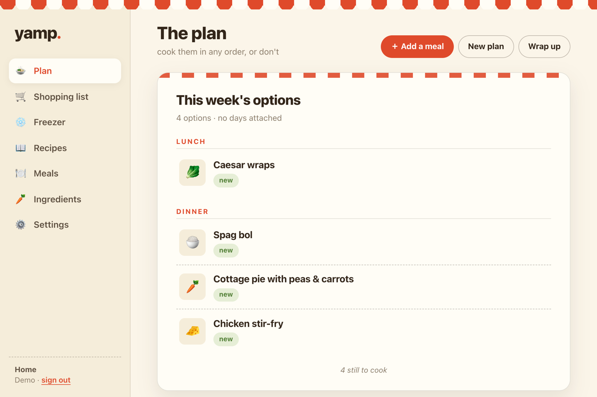
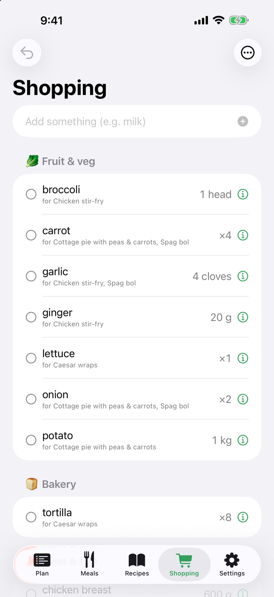
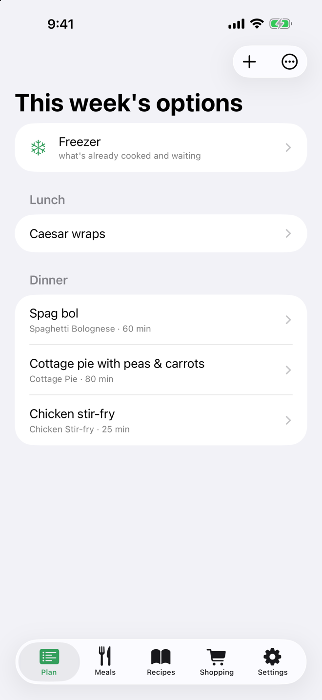
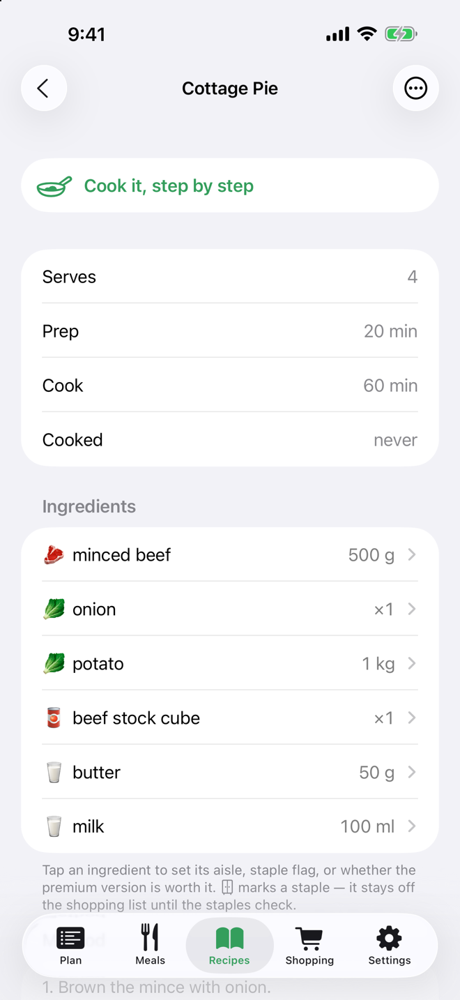

No days
A plan is five dinners you'd be happy to cook, in any order. A surprise trip breaks nothing, because nothing was pinned to a day.
Fortunately, this one is good.
A recipe library, a pool of dinner options and an aisle-sorted shopping list, running on your server, driven by whichever AI assistant you already talk to. There is no LLM inside.


Most meal planners want you to put a meal on each day. YAMP doesn't.
A plan is five dinners you'd be happy to cook, in any order. A surprise trip breaks nothing, because nothing was pinned to a day.
Every item shows which meals need it. Drop a meal and only its share comes off the list, even if you've already ticked things off. Amounts only add together when the units match.
Supermarkets have no signal. The iPhone app keeps the list on the phone, saves every tick, and syncs when you're back outside. Nothing gets added twice.
Mark a meal cooked and it's remembered, even after the plan is gone. The recipe library shows "cooked 12×, last May" and can sort by most cooked or not had in a while.
Staples check
Every recipe wants a bit of olive oil, and you almost always have some. Mark it as a staple and it stops landing on the list every week, along with the rice, the stock cubes and the rest. Before a shop, the staples check walks you through them. Tap the ones you're low on and they're added to the list, in aisle order.
Some ingredients are worth paying more for and some aren't. Mark each one premium or budget, with a short note on why. It shows on the shopping list and in recipes, so whoever does the shop buys the right one. Your AI reads it too, so "plan a cheap week" only saves money where you said it could.
Ingredient verdicts
Everyone else is bolting a chatbot onto their app and renting it back to you monthly. YAMP ships the opposite half: a complete, documented API and the instructions your assistant needs to drive it. Claude, ChatGPT, a local model, whatever you already use: point it at your server and it plans, ingests and shops as you.
YouPlan next week: two of the usuals, the tray bake from this URL, and something we've not had in a while.
Your assistant submit_recipecreate_planget_shopping_list Done. Katsu curry and cottage pie, the harissa tray bake from that page, and lamb kofte, which you last cooked in February. The list is 19 items in shop order; you already had rice and chopped tomatoes.
Named after what you'd ask for: ingest_recipe, check_off, add_meal_to_plan.
/skill and /prompt-pack are served live by your instance, with its own URL already filled in. An assistant learns the whole system from one GET.
Recipe URLs are read from the page's own schema.org data. No model call, cached forever. Only messy pages get handed to your AI.
The prompt pack plus an API token works for any assistant that can make an HTTP request.
Connect your assistant, once
claude mcp add --transport http yamp https://your-server/mcp
connected · 37 tools and it fetches the playbook from /skill by itself.
Every endpoint is in the API docs, served by the demo server.
A native iPhone app that works offline and syncs when you have signal again.


And for the bigger screen, a web app. Your server serves it itself at /app: plan the week, tidy the recipe library and run the staples check from a laptop, then walk the shop with the phone. Same household, same API, nothing extra to deploy: if the server is up, so is the web app.
The software is open source (AGPL) and complete. Self-hosted, it has every feature, with no limits and no trial. You only pay if you'd rather we ran the server for you, because hosting, backups and looking after them cost real money.
£0 forever
Not a free tier. The whole thing.
open to anyone
£20 per household, per year
We run the server. You get a URL.
A household is free within the limits shown at sign-up; paying for the year lifts them. Terms and refunds.
£n you pick n
Keep the free thing free.
GitHub takes no cut of the first one, so it is the one that helps most.
Start the whole stack
make up
Postgres and the API on :8000, the web app at /app, the MCP server on :8100, all in Docker.
Give yourself something to look at
make seed
Demo recipes, a plan, a ready-made shopping list, and an API token to hand to an assistant.
No checkout? One container. Every release publishes an image that is the whole thing at once: the API, the web app, the skill it publishes about itself, and the MCP endpoint. It defaults to SQLite, runs as an ordinary user, and takes no arguments.
docker run -d -p 8000:8000 -v yamp-data:/data ghcr.io/marco308/meals
No Docker? make run starts the API on SQLite with no services at all. It runs happily on a Pi-class box or the cheapest VPS money rents.
YAMP was built for one real household first, and the reference instance is still that family's actual dinner. It is the hosted service too, open to anyone, but a new account there starts with an empty household, and every other household on it is somebody's real one. To look around first, try the demo: a household of your own, already filled with recipes, a plan and a shopping list, deleted after a day.
Yes. AGPL-3.0, the whole application. The hosted tier exists because some people would rather pay than run Docker, not because the free one is crippled.
Because the world didn't need another meal planner, and yet the existing ones kept annoying me and didn't really work how I wanted them to work, so I wrote my own. And it had to be called something.
They are excellent recipe managers with big communities; if you want a recipe wiki, use them happily. YAMP is a planning and shopping tool first: plans without days, a provenance-aware list that works in a basement, and an API designed to be driven by an AI rather than browsed by a human. Run it next to Mealie.
Anything that speaks MCP connects in one command. Anything that can make an HTTP request works with the prompt pack and a token. The server itself has no LLM and never calls one, so there is no model bill hiding in your grocery list.
Web ships in the box: your server serves the web app itself at /app, same-origin with the API, nothing extra to run. The API is open and documented, and the iPhone and web apps are just two clients of it; an Android client is a pull request we would take seriously, and your AI can already drive everything from any platform today.
Self-hosters: nothing. Hosted households: full export at any time, and the exact same software runs at home.